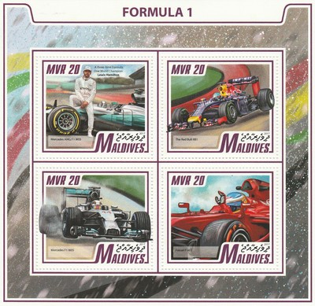

Republic of Maldives
 |
 Issue date: Unknown A mini sheet of one value featuring the Brabham BT50; the car, powered by the four cylinder 1.5 litre turbocharged BMW engine, was driven by Nelson Piquet and Ricardo Patrese in the 1982 season. It recorded just one win, the Monaco Grand Prix (driven by Patrese). The car was one of the first to feature on board telemetry as a means of monitoring the engine's fuel injection.  Issue date: Unknown A set of eight stamps featuring the following F1 cars: - Williams FW07 - designed by Patrick Head for the 1979 F1 season, it was driven by Alan Jones and Clay Regazzoni - Regazzoni won the 1979 British Grand Prix in the FW07, giving Williams their first ever race win - Brabham BT50 - driven by Nelson Piquet and Ricardo Patrese in the 1982 F1 season - it was one of the first cars to feature telemetry - Williams FW11 - designed by Patrick Head and Frank Dernie for the 1986 F1 season, it was driven by Nigel Mansell and Nelson Piquet - Williams won the constructors' championship with this car - Ferrari 312 T3 - introduced for the 1978 F1 season, this car was no match for the pioneering Lotus 79 ground effect "wing car" - Lotus 99T - developed for the 1987 F1 season, it was the first Lotus chassis to be fitted with electronic active suspension and provided Ayrton Senna with two victories in that year - Benetton B188 - this car was designed by Rory Byrne for the 1988 F1 season - Tyrrell P34 - used in the 1976 and 1977 F1 seasons, the six-wheeled Tyrrell was one of the two most radical entries ever to succeed in F1 competition, and has specifically been called the most recognizable design in the history of world motorsports - Renault RE30B - this car was developed for the 1982 F1 season  Issue date: Unknown A mini sheet of one value featuring the Ferrari F1/89 (aka 640) built for the 1989 season. It was driven by Nigel Mansell and Gerhard Berger. The car was designed by John Barnard, and it was the first Ferrari he was responsible for designing. It sported a sharp nose, with a narrow monocoque and bulging side-pods designed to house the radiators with maximum aerodynamic efficiency. The 640 was powered by Ferrari's own 3.5 litre V12 engine which produced up to 660bhp, a fine effort considering that it was the team's first naturally aspirated engine for almost a decade. However, the transmission it was mated to attracted more attention, as it contained the very first 7-speed semi-automatic gearbox seen in F1. In its first season, it proved to be very unreliable, and hampered Ferrari's efforts throughout the year. However, such gearboxes would become the norm by the mid-1990s. The car proved to be fast, and it won its debut race, despite fears of unreliability and underwent a number of minor modifications that allowed Mansell and Berger to net three wins between them, including a win at Estoril where the Ferraris were clearly more competitive than the McLarens. Although Berger failed to finish the first eleven races of the season, the carbon-fibre chassis did prove to be very strong however, and allowed Berger to escape from a fiery high speed crash in San Marino with only minor burns to his hands and a couple of broken ribs. When the car did finish races, it never finished lower than 3rd place. Issue date: 1991 A mini sheet of values featuring Enzo Ferrari and some of his F1 cars: - Ferrari 246 F1 - Ferrari 375 F1 - Ferrari F1/89 (640) - Ferrari 312 T Issue date: 22nd April 2015 A mini sheet containing a single value featuring various F1 cars. Issue date: 22nd April 2015 A mini sheet of four values featuring various F1 cars. Issue date: 2013 A mini sheet featuring the following F1 cars: - Renault R28 (2008) - Ferrari F60 (2009) Issue date: 2013 A mini sheet featuring the following F1 cars: - McLaren MP4/24 (2009) - Force India VJM06 (2013) - Williams FW35 (2013) - Ferrari F60 (2009)  Issue date: 12th September 2017 A mini sheet of four values featuring the following F1 cars: - Mercedes F1 W05 - Red Bull RB10 - Ferrari F14 T Issue date: 12th September 2017 A mini sheet of one value featuring the following F1 cars: - Sauber C36 - The C36 is the first Sauber built after the team's takeover by Longbow Finance S.A. Originally intended to be the last Sauber car to be fitted with Ferrari engines, after the team secured a deal to run with customer and up-to-date Honda powered engines for the 2018 season, the deal to run with Honda powered engines was cancelled on 27 July 2017 and the team eventually secured another year of Ferrari engines for 2018. - McLaren MP4-29 - in 2014 the cars sported a Mobil 1 livery to honour the team's 20-year association with the brand. At the season opener both cars scored podium finishes, however this was followed by disappointing performances, including both cars unable to complete the Bahrain Grand Prix due to technical reasons. The team failed to record another podium finish all season, and although statistically the MP4-29 was the most mechanically reliable car of the season with 36 classified finishes out of a possible 38, they ultimately finished fifth in the Constructors' Championship.  Issue date: 2018 A min sheet of one value featuring the Ferrari 156 F1. The Ferrari 156 was raced by Ferrari from 1961 to 1964, it was designed to comply with then-new F1 regulations that reduced engine displacement from 2.5- to 1.5-litres. Phil Hill won the 1961 World Championship of Drivers and Ferrari secured the 1961 International Cup for F1 Manufacturers, both victories achieved with the Ferrari 156. Issue date: 2018 A mini sheet of four values featuring the following cars and drivers: - Lewis Hamilton - Sebastian Vettel - Ferrari F138 - Brabham BT52  Issue date: 30th April 2019 A mini sheet of one value featuring Lewis Hamilton and the Mercedes AMG F1 W09 EQ Power+ (2018) - in 2018, Hamilton secured his fifth Drivers' Championship. Issue date: 30th April 2019 A mini sheet of four values featuring the following cars and drivers: - Nico Hulkenberg, Renault R.S.18 (2018) - Sebastian Vettel, Ferrari SF71H (2018) - Max Verstappen, Red Bull RB14 (2018) - Kimi Raikkonen, Ferrari SF71H (2018) Issue date: 23rd July 2020 TBD  Issue date: 23rd July 2020 TBD |